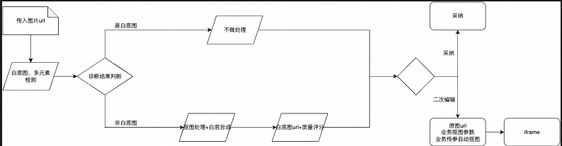
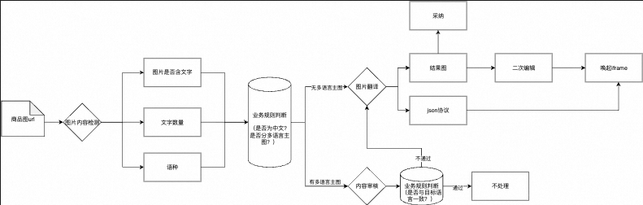

能力封装
将白底图检测、抠图、图翻、详情页生成等能力拆成清晰输入输出，便于业务平台通过 iframe / API 接入。
Business Case
面向电商业务的内部图片处理平台，由 AI 设计中台提供底层 AI 能力支持。我负责把白底图、图片翻译、详情页多语种和卖点图等场景拆成可调用、可测评、可复用的产品能力。
Brand+ 的关键问题不是“有没有模型”，而是底层图像能力如何稳定进入真实电商生产链路。项目需要同时处理业务输入、工具唤起、生成结果、二次编辑、质量评估、历史任务和结果回传，最终支撑白底主图、多语言图片翻译、详情页处理、主图套图和卖点图等核心场景。


将白底图检测、抠图、图翻、详情页生成等能力拆成清晰输入输出，便于业务平台通过 iframe / API 接入。
围绕白底图、图翻、详情页等场景建立批量测试口径，覆盖生成质量、翻译质量、处理耗时和 bad-case。
梳理图翻 JSON 协议、HTML 协议、超编协议之间的转换关系，保证生成结果可继续编辑。
把套图、详情页、PRD、会议纪要等能力沉淀为可复用 Skill，方便后续跨场景调用。